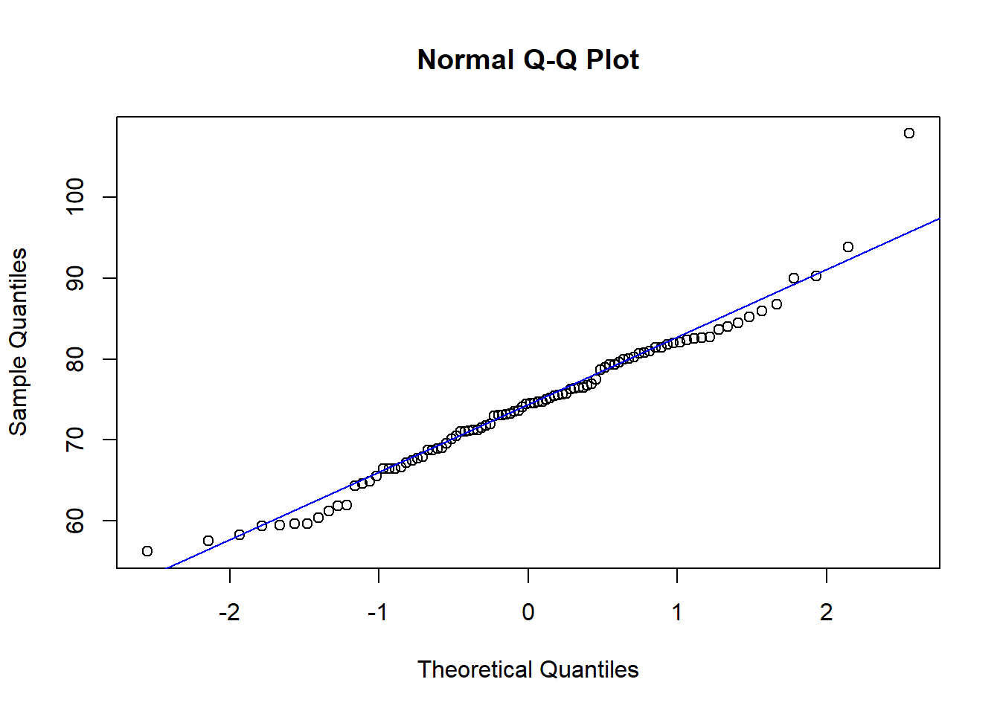
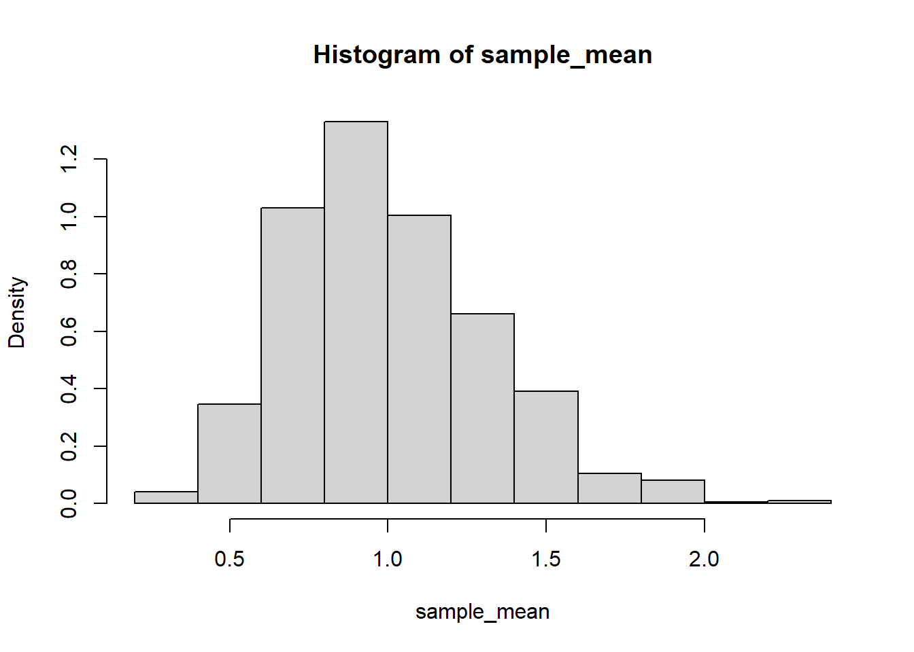
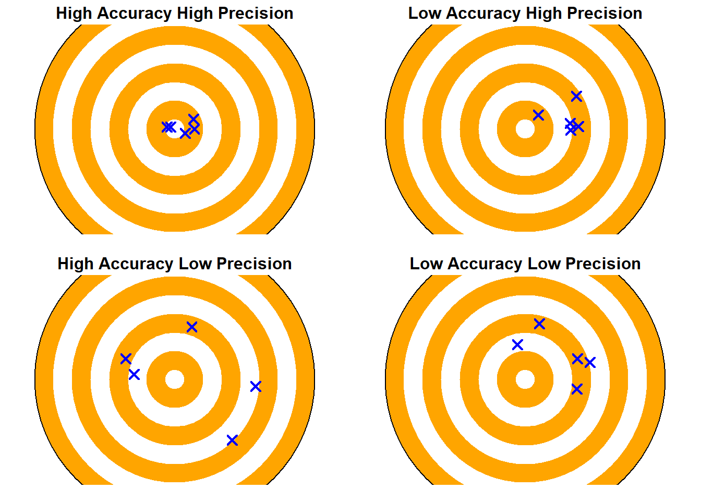

F5. Sums, Central Limit Theorem, Statistical model
Estimation of unknown parameters
Uptil now we have looked at random variables with known parameters
In reality, the parameter values are unknown to us.
We have to “estimate” the parameters from our observations
To find a good model for the population
Assume that we are interested in studying the quantity of a specific hormone in humans.
What distribution does the hormone quantity have in humans?
Hormone quantity is a continuous random variable, but is it an Exp(\(\lambda\)), N(\(\mu\),\(\sigma\)), or U(a,b) distribution?
Is there any indication that the hormone quantity could be described by any of these models?
We collect data on hormone quantities.
We assess how well the model describes the data by using the data to estimate the model’s parameters, and then examining how well the model fits the data.
Model fit - histogram and density function
We can see which distributions that fits well to data by comparing:
- Histogram with density function of the fitted model
A histogram counts the number falling within intervals on a continuous scale (bins). Don’t forget that the area of the histogram needs to be 1 in order to compare with the density function. This is achieved by scaling the height. In R, you write:
hist(jordprov$al,probability=TRUE)
Model fit - distribution functions
We can see which distributions that fits well to data by comparing:
Histogram with density function of the fitted model
Empirical distribution function with theoretical distribution function
Model fit - distribution functions
We can see which distributions that fits well to data by comparing:
Histogram with density function of the fitted model
Empirical distribution function with theoretical distribution function
Quantile-quantile plot comparing empirical to theoretical quantiles (it is easier to see a fit with a straight line)

Beta distribution
Extra material
There are few things in nature that follow a uniform distribution. However, there are many quantities that are both upward and downward bounded. An example is a proportion lying in the interval from 0 to 1.
The Beta distribution is a distribution defined for a continuous random variable over an interval. It is more flexible than a uniform distribution. A uniform distribution is a special case of the Beta distribution.
\(X \sim Beta(\alpha,\beta)\)
The Beta distribution is not covered in this course, but I want you to have heard of it and I will mention it in the last lecture.
Sampling distributions
Example. Weight of ants.
Assume that the weights of ants follows a normal distribution, for which the expected value is unknown to us.
We find an anthill and choose 10 ants
Model: \(X_i=\text{"ant i's weight in mg"}\) \[X_i \sim N(\mu,\sigma)\]
random sample: \(\{x_1,x_2,\dots,x_{10}\}\)
- We estimate the expected value with the sample mean
\[\hat{\mu} = \bar{x}\]
- We derive the sample mean to be \(\bar{x} = 5.2\) mg.
If we were to choose 10 new ants, will the sample mean also be 5.2 mg? Unlikely.
Imagine collecting samples of ants many times and calculating the mean each time. There is random variation in the sample means. One can say that the mean of repeated samples is a random variable which we can denote as \(\bar{X}\).
When the population can be assumed to be normally distributed
We assumed that the weight of an ant is normally distributed.
According to the rule “a sum of normally distributed variables is also normally distributed,” the sample mean will also be normally distributed.
We consider the weights of ants as observations from the same distribution (they are identically distributed).
We also consider them as independent.
Then: \[\bar{X} \sim N(\mu,\frac{\sigma}{\sqrt{n}})\]
where \(n=10\). We can the estimate the expected value \(\mu\) and the standard deviation \(\sigma\) with the sample we have.
mu = 5 # expected value
sigma = 1 # standard deviation
n = 10 # sample size
iter = 1000 # number of iterations we draw a new random sample and calculate the sample mean
sample_mean <- replicate(iter,mean(rnorm(n,mu,sigma)))
hist(sample_mean,prob = TRUE)
xx = seq(4,6,by=0.01)
yy = dnorm(xx,mu,sigma/sqrt(n))
lines(xx,yy,col='blue') #the density distribution for N(mu,sigma/sqrt(n))
\(\bar{X}\) or \(\bar{x}\)
It is also fine to use \(\bar{x}\) to denote sample mean as a random variable, as long as it is provided in the context that it is a random variable and not your calcluated valeu. E.g.
\[\bar{x} \sim N(\mu,\frac{\sigma}{\sqrt{n}})\]
When we do not know which distribution a population has
What happens if we do not know which distribution the weights of the ants have?
Which distribution will the sample mean then have?
n = 10 # sample size
iter = 1000 # number of iterations we draw a new random sample and calculate the sample meansample_mean <- replicate(iter,mean(rexp(n))) # the true distribution is exponential
hist(sample_mean,prob = TRUE)
sample_mean <- replicate(iter,mean(runif(n))) # the true distribution is uniform
hist(sample_mean,prob = TRUE)sample_mean <- replicate(iter,mean(rlnorm(n))) # the true distribution is log-normal
hist(sample_mean,prob = TRUE)Central Limit Theorem (CLT)
The Central Limit Theorem say that of you add a large number of independent random variables from the same distribution with expected value \(\mu\) and variance \(\sigma^2\), then the sum (or average) is approximately normally distributed.
If \(n\) is large enough, then \(Y_n = X_1+X_2+...+X_n\) is approximately normally distributed regardless of which distribution \(X_1, ..., X_n\) belong to.
\[\frac{Y_n}{n} \overset{A} \sim N(\mu,\frac{\sigma}{\sqrt{n}})\]
Example. 100 pills
The weight (in gram) of a randomly chosen pill from a batch of similar pills is a r.v. with expected value \(\mu = 0.65\) and variance \(\sigma^2=0.0004\)
- What is the expected value and variance for the total weight of the 100 pills (the weights are independent of each other)?
Model: Let \(X_i = \text{"weight of pill i"}\), where \(i = 1,\dots,100\)
Let \(Y_{100} = \sum_{i=1}^{100} X_i\)
\(E(Y_{100})=100\cdot \mu = 65\)
\(V(Y_{100})=100\cdot \sigma^2 = 0.04\)
- What is the probability that 100 pills weights at the most 65.3 gram?
Because 100 is a large number, according to the CLT, the sum of the weights is approximately normal.
\[\begin{split} & P(Y_{100} \leq 65.3) = P(\frac{Y_{100}-\mu}{\sigma} \leq \frac{65.3-\mu}{\sigma}) = \\ & \Phi(\frac{65.3-65}{\sqrt{0.04}}) = \Phi(\frac{0.3}{0.2}) = \Phi(1.5) = 0.9332 \end{split}\]
CLT and the Binomial distribution
- Binomial distribution
\(Y = \text{"the number of times event A occurs in n trials"}\)
\(Y \sim Bin(n,p)\) where \(p = P(A)\) and trials are assumed to be independent.
\(E(Y) = np\) and \(V(Y) = np(1-p)\)
- Alternative way - think of the binomial distribution as a sum of independent random variables
\(X_i = \left\{ \begin{array}{lr} 1 & \text{if A occurs in trial i}\\ 0 & \text{otherwise} \end{array}\right.\)
\(Y_n = \sum_{i=1}^n X_i\)
If \(np(1-p)\geq 10\) one can use CLT and consider \(Y_n\) to be approximately normal distributed
\(Y_n \overset{A} \sim N(np,\sqrt{np(1-p)})\)
Example. Smokers
100 randomly chosen swedish were asked if they smoke. What is the probability that more than 40 responded that they smoke? It is known from before that about 30% of the Swedish population is smoking.
Let \(X=\text{"number of respondents that answered that they smoke"}\)
\[X\sim Bin(100,0.3)\]
\(P(X \geq 40) = ?\) calculate exactly, use table or other?
Can we use CLT and approximate to a normal distribution?
Yes, because \(V(X) = np(1-p) = 100\cdot 0.3 \cdot (1-0.3) = 21 \geq 10\)
\[\begin{split} & P(X \geq 40) = 1 - P(X \leq 39) = \\ & 1 - P(\frac{X-\mu}{\sigma} \leq \frac{39-\mu}{\sigma}) \overset{A} = 1 - \Phi(\frac{39-100\cdot 0.3}{\sqrt{21}}) = \\ & 1 - \Phi(1.96) = 1 - 0.975 = 0.025 \end{split}\]
When can one do normal approximations?
\(Bin(n,p) \overset{A} \sim N(np,\sqrt{np(1-p)})\) if \(np(1-p)\geq 10\)
\(Po(\lambda) \overset{A} \sim N(\lambda,\sqrt{\lambda})\) if \(\lambda \geq 15\)
in general for other distribution - if it is a sum of independent and identically distributed random variables, where n must be large and the variance of the sum sufficiently large.
Example. Air plane
The weight of a randomly chosen flight passenger is a random variable with with expected value 75 kg and standard deviation 12 kg. An air plane can have at maximum 3120 kg of passenger weight.
- What is the probability that the total weight of 40 randomly chosen passengers exceeds the maximum capacity?
Let \(X_i = \text{"weight of passenger i"}\) where \(i=1,\dots, 40\) are equally distributed random variables.
\(Y_{40} = \text{"total weight of 40 passengers"}\)
According to CLT is \(Y_{40} \overset{A} \sim N\) where the expected value is \(\mu \cdot n = 75\cdot 40 = 3000\) and the standard deviation is \(\sigma \sqrt{n}= 12\sqrt{40} = 75.9\)
We seek \[\begin{split} & P(Y_{40} > 3120) = 1 - P(Y_{40} \leq 3120) \overset{A} = \\ & 1 - \Phi(\frac{3120-3000}{75.9}) = 1 - \Phi(1.58) = \\ & 1- 0.9429 = 0.0571 \end{split}\]
- There is an ambition to lower the risk of exceeding the maximal capacity with 40 passengers to about 1/100. How large must the maximal capacity at least be?
The maximal capacity corresponds to the quantile that divides the probability distribution into 99% and 1%. This is \(\mu \cdot n + \lambda_{.01} \cdot \sigma \sqrt{n} = 3000 + 2.3263 \cdot 75.9 = 3177\)
Example. Families
In a suburb there are 1000 families. The probability distribution for \(X = \text{"number of children in pre-school age in a randomly chosen family"}\) is
\[f(x) = \left\{ \begin{array}{lr} 0.4 & x = 0\\ 0.2 & x = 1\\ 0.3 & x = 2\\ 0.1 & x = 3\\ 0 & x \geq = 4 \end{array}\right.\]
The number of children in different families are independent.
How many preschool places should be planned if the probability of all children getting a place is to be 90%?
Since 1000 is a large number, we can according to CLT say that \[Y_{1000} = \sum_{i=1}^{1000} X_i \overset{A} \sim N(\mu \cdot 1000, \sqrt{\sigma^2\cdot 1000})\]
\(\begin{split} & \mu = E(X) = \sum_{\text{all x}} x\cdot f(x) = \\ & 0 \cdot 0.4 + 1 \cdot 0.2 + 2 \cdot 0.3 + 3 \cdot 0.1 = 1.1 \end{split}\)
\(\begin{split} & \sigma^2 = V(X) = E(X^2) - [E(X)]^2 = \\ & 0^2 \cdot 0.4 + 1^2 \cdot 0.2 + 2^2 \cdot 0.3 + 3^2 \cdot 0.1 - 1.1^2 = \\& 2.3 - 1.21 = 1.09 \end{split}\)
We want to find the quantile \(y_{.90}\) for which \(P(Y_{1000} \leq y_{.90}) = 0.90\).
Since 1000 is a large number, according to the Central Limit Theorem (CLT), we can consider the need for places for the 1000 families to be approximately normally distributed with an expected value \(\mu \cdot 1000 = 1100\) and variance \(\sigma^2 \cdot 1000 = 1090\).
prob = 0.9
fill = paste0(round(100*(prob),0),"% probability")
pp = ppoints(200)
x = qnorm(pp,1100,33)
pdf = dnorm(x,1100,33)
df <- data.frame(x=x,pdf=pdf,pp=pp)
ggplot(df,aes(x=x,y=pdf)) +
geom_line() +
ggtitle("Demand of pre-school places") +
geom_ribbon(data=df[df$pp < prob,],
aes(ymin=0, ymax=pdf, fill=fill)) +
theme_bw() +
xlab("x") +
ylab("f(x)") The quantile we are looking for is \[\mu \cdot n + \lambda_{.10} \cdot \sqrt{\sigma^2 \cdot n} = 1100 + 1.2816 \cdot 33 = 1143\]
Statistical inference
| Population | Random sample | |
|---|---|---|
| Quantity | \(X\) | \(\{x_1,\dots ,x_n\}\) |
| Number of units | n | n |
| Mean | \(\mu\) (expected value) | \(\bar{x}\) (sample mean) |
| Variance | \(\sigma^2\) | \(s^2\) (sample variance) |
| Standard deviation | \(\sigma\) | \(s\) |
| Parameter | \(\lambda\) | \(\hat{\lambda}\) (estimate of parameter) |
What is the difference between probability theory and statistical inference?
Probability theory
- Probability distributions are known (we know all parameters in the model for the population)
Statistical inference
The probability distributions are not known, the type of distribution or parameters unknown
We use data to estimate parameters and choose model, and make conclusions with the help of the models
Parameter estimation
An estimate is the suggested value of an unknown parameter
The estimate is derived from the random sample and is itself a random variable
A good estimate \(\hat{\theta}\) for the parameter \(\theta\) must
- be unbiased \(E(\hat{\theta}) = \theta\)
and
- have a small variance \(V(\hat{\theta})\) as possible (be effective)
Example. Effective estimate
Let \(X_1\), \(X_2\) and \(X_3\) be independent random variables with equal expected value \(\mu\) and variance \(\sigma^2\)
Which one of the following estimates are the best to estimate the expected value?
\(\hat{\theta}_1 = \frac{X_1+X_2+X_3}{3}\)
\(\hat{\theta}_2 = X_2\)
- Both are unbiased
\(E(\hat{\theta}_1)=\frac{E(X_1)+E(X_2)+E(X_3)}{3} = \mu\)
\(E(\hat{\theta}_2)=E(X_2) = \mu\)
- \(\hat{\theta}_1\) is the most effective and thereby the best
\(V(\hat{\theta}_1)=\frac{V(X_1)+V(X_2)+V(X_3)}{3^2} = \frac{3\sigma^2}{3^2}=\frac{\sigma^2}{3}\)
\(V(\hat{\theta}_2) = V(X_2) = \sigma^2\)
Bias and precision
Unbiased implies high accuracy
Low variance corresponds to high precision in an estimate

Parameter estimation of \(\mu\) and \(\sigma^2\)
- Unbiased estimates of the expected value and variance
\[\hat{\mu} = \frac{\sum_{i=1}^n x_i}{n} = \bar{x}\]
\[\hat{\sigma}^2 = \frac{\sum_{i=1}^n (x_i - \bar{x})^2}{n-1} = s^2\]
- The sampling distribution for \(\bar{x}\) is
\[\bar{x} \sim N(\mu,\frac{\sigma}{\sqrt{n}})\]
but only if we know \(\sigma\)!
Standard Error of the Mean
The standard error of the mean (SEM) is the standard deviation on the estimate of the expected value, i.e.
\[D(\hat{\mu})\]
When population variance is known:
\[SEM = \frac{\sigma}{\sqrt{n}}\]
When population variance is unknown and estimated by sample variance \(s^2\):
\[SEM = \frac{s}{\sqrt{n}}\]
t-distribution
The Student t-distribution is a sampling distribution for the ratio \(t=\frac{\bar{x}-\mu}{s/\sqrt{n}}\)
the t-ratio is a standardisation of an estimate of the expected value (which can be normally or approximately normal according to CLT), but where we divide by the estimated standard deviation instead of \(\sigma\)
## simulation of the sampling distribution t
mu = 0 # choose what you want
sigma = 1 # choose what you want
n = 6 # the number of values in the random sample
niter = 1000 # number of ties we sample new data
t_ratio <- replicate(niter,
{
x <- rnorm(n,mu,sigma)
s <- sd(x)
(mean(x)-mu)/(s/sqrt(n))
}
)